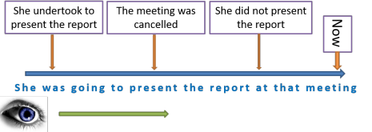
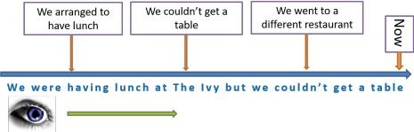
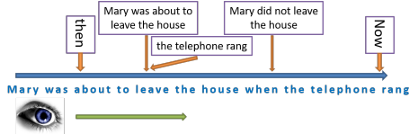
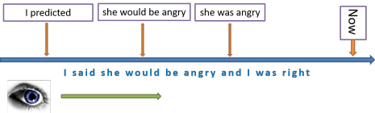
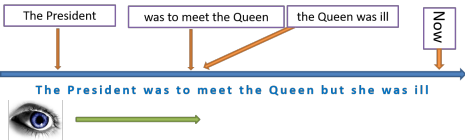

The future in the past
 |
| He was always going to be a botanist |
You may like to look at the guides to future forms before tackling this guide. Then again, you may not. If you are content that you have a reasonable understanding of the seven or so forms English uses to talk about the future, then we can go on.
 |
Reported or indirect speech vs. the future in the past |
You should also bear in mind the guide to reported or indirect speech, linked in the list of related guides at the end, because a great deal of what is there impinges on this area. This is especially true for phenomena such as back-shifting tenses and the changes made to modal auxiliary verbs such as will. If that's unclear, see the guide.
There are times when we need to discuss plans that were made or
undertakings given for the future seen from the viewpoint of the past.
For example, if you mentally form a current intention such as
I'm going to call him
tomorrow and
then later want to discuss the intention, you might use an expression
such as
I was going to call him
That's not the same as using reported or indirect speech, but it
is very similar because you are reporting your own thoughts.
By the same token, indirect speech often includes
such examples as
He said he would come
He
promised to write to me
She undertook to have finished it by Friday
etc.
which are
all ways of reporting what was said, written or implied.
This guide is not concerned with repeating what is explained in the one
on indirect or reported
speech.
 |
The 5 main ways of talking about the future from a past perspective |
There are five main ways English uses to see the future from the
perspective of the past. All of them express the same views of the
future that are expressed by similar constructions used either to talk about
the future proper or to refer to some current intention, willingness or
plan which will affect the future.
If you would like to remind yourself of the
four most common ways to talk about future time in English, see
the guide to four future forms, linked below.
 |
was / were going to |
This is sometimes called the unfulfilled intention
construction. If you have an intention to do something but
your plans are thwarted, you may well express the situation as
something like:
I was going to take a week off but
there's too much to do
Equally, if someone uses
will/shall to express
current willingness such as:
I'll let you have the money soon
but the promise is not kept, the person owed the money might well
express the situation as:
You were going to let me have the money soon
Notice how polite, even tentative, this can sound
compared with, e.g.
You promised to let me have the
money
 |
past progressive |
This parallels the use of the present progressive used
for plans and arrangement currently in place. For example, in narrative
style we might find:
They were meeting in Paris the following
week
which is not exactly reported speech but a very similar function
conceptually.
This form is also often used to complain about arrangements broken
or forgotten:
Did you forget that we were having lunch together today?
 |
was / were about to |
Used in the present, this marginal modal form implies an almost
certain imminent action:
I am about to lose my temper
She is about to go to the airport
Occasionally, however, the action is cancelled or postponed (that's
life) so we get a similar construction, often with but (to
explain a reason) or when (to introduce an intervening
act):
I was about to lose my temper
but he apologised so nicely
that I calmed down
She was about to go to the airport
when the boss rang to say the
trip was off
A parallel structure is another marginal modal, be on the point of,
as in, e.g.
I was on the point of losing my temper when
she apologised
A similar but rather odd marginal modal auxiliary verb construction
is went to which, when used in this way does not carry the
normal sense of went at all. For example:
I went to say something
but she interrupted
The form is only used to refer to
unfulfilled past intentions.
 |
would |
We are not here discussing forms such as
They said they would come at 6.
That is simply the
change to the verb will used for predicted futures which is a common event when it is
reported at a later time, back-shifting from will to
would, its past form.
The modal would is used as the past of will in many situations where will is used to make firm future predictions. The difference, of course, is that when the prediction is in the past we usually know whether it turned out to be accurate. For example:
| present prediction | past prediction |
| Computers will get faster and cheaper | Computers would get faster and cheaper |
| She will be a farmer | She would be a farmer |
| She won't be much good at it | She wouldn't be much good at it |
The use of would to refer to a future in the past is also common in the context of projecting mental processes such as expect, think, imagine, guess, assume, hope, suspect etc. For example:
| present projection | past projection |
| I suspect it will rain | I suspected it would rain |
| I hope she will see sense | I hoped she would see sense |
| They imagine I won't understand | They imagined I wouldn't understand |
There's not much that's mysterious in either use because the form is closely analogous to the reported speech use exemplified above.
There is a rather formal use of
would which
refers to the future in the past. This form is commonly used
in narratives, often to anticipate the plot in some way and grab the
reader's attention.
Here's an example:
She very soon would feel guilty about
what she had done
The future forms
proper that this parallels are not always easy to identify and quite varied
but they include things like:
She is going to feel guilty about what
she has done
She will feel guilty about what she has done
She will be feeling guilty about what she has done
 |
was / were + to |
This parallels the formal obligation form. For
example:
The children are to come to school 10 minutes early next Monday
You are to present the report at the next
board meeting
If the obligation remains unfulfilled after the event, it is often
discussed along with the reason for the failure using the
conjunction but
(or a similar concessive conjunct such as however etc.):
The children were to come to school ten
minutes early
but the bus broke down
I was to present the report at the next
board meeting.
However, it was cancelled at the last minute
See the footnote for another example.
 |
Problems for learners |
The fundamental issue for learners is that languages vary in how
relationships between times are expressed. This is a
conceptual issue as much as a grammatical one.
In English, we can refer to an event which is relative to another by
using the aspectual system so, for example:
I was going to telephone you later about this
in which the speaker is moving the point of reference into the past
and expressing a future idea from there. The centre of this
sentence is, therefore, the past, not the present. In
technical terms, we can say that the speaker has shifted the deictic
centre from its usual place (here, now and me) into the past.
Other languages take a different tack and, lacking relative or
relational tense
form, use adverbials instead or will use a simple past tense form to
make this kind of statement such as:
I wanted to telephone you later about this
which expresses only more or less the same idea.
Even comprehending what is meant by, for example:
He was hosting a dinner party and left work
early
is not straightforward for learners whose first languages do not
have relational tense aspects, especially if they have been told that
the past progressive form is used to signal on-going events in the
past.
The upshot is that a good deal of error occurs when learners
struggle to express the idea of a past intention, promise or
arrangement. Examples are:
*I will telephone you earlier today
*I would telephone you earlier today
*He is hosting a dinner party and left work early
*He would host a dinner party and left work early
and more. All are caused by the inability to grasp the tense
forms required in English to move the centre to the past.
 |
time lines |
None of the above (with the exception of the rarer would
form) is particularly difficult to form but the concept of shifting the
point of view (the deictic centre) into the past is somewhat mysterious
to many learners.
Time lines help. In these, it is important that the eye is
included because the forms are dependent on the way events and ideas are
perceived. Here are examples of the time lines for all five ways
of expressing a future embedded in the past:
was / were going to

past progressive

was / were about to

would

was / were to

Even with the use of time lines and other graphical
representations, the need for constant concept checking remains.
For example:
- She was going to present the
report at that meeting
- When did she agree to present the report?
- When was the meeting?
- Did she present the report?
- We were having lunch at The
Ivy but we couldn't get a table
- What was arranged?
- Did they have lunch at The Ivy?
- Why not?
- What did they do?
- Mary was about to leave the house when the telephone
rang
- Where was Mary?
- Where exactly?
- What was she doing?
- What happened
- What did Mary do?
- Did Mary leave the house?
- I said she would be angry and I was right
- What did I predict?
- Was I right?
- Is she angry now?
- The President was to meet the Queen but she was ill
- What was arranged?
- Is the President with the Queen now?
- Why not?
- Where is the Queen now?
There is a very short test on this.
| Related guides | |
| reported or indirect speech | for the guide to the area which includes the reporting of future forms |
| four future forms | for a general guide to talking and writing about the future in English |
| Other tense forms | |
| present forms | for the guide to talking and writing about the present |
| four more future forms | for consideration of a range of alternative future formulations |
| past forms | for consideration of a ways of talking and writing about the past |
| past perfect | for a guide to this area alone |
| present perfect | for a guide to a troublesome form |
| tenses and aspects | for the index to the whole area |
Footnote:
For the forms under 4 and 5 above, you may like to consider this bit
from Oscar Wilde:
She was thinking of Prince Charming, and, that
she might think of him all the more, she did not talk of him, but
prattled on about the ship in which Jim was going to sail, about the
gold he was certain to find, about the wonderful heiress whose life he
was to save from the wicked, red-shirted bushrangers. For he was not to
remain a sailor, or a super-cargo, or whatever he was going to be. Oh,
no! A sailor's existence was dreadful. Fancy being cooped up in a horrid
ship, with the hoarse, hump-backed waves trying to get in, and a black
wind blowing the masts down, and tearing the sails into long screaming
ribands! He was to leave the vessel at Melbourne, bid a polite good-bye
to the captain, and go off at once to the gold-fields. Before a week was
over he was to come across a large nugget of pure gold, the largest
nugget that had ever been discovered, and bring it down to the coast in
a waggon guarded by six mounted policemen. The bushrangers were to
attack them three times, and be defeated with immense slaughter. Or, no.
He was not to go to the gold-fields at all. They were horrid places,
where men got intoxicated, and shot each other in bar-rooms, and used
bad language. He was to be a nice sheep-farmer, and one evening, as he
was riding home, he was to see the beautiful heiress being carried off
by a robber on a black horse, and give chase, and rescue her. Of course
she would fall in love with him, and he with her, and they would get
married, and come home, and live in an immense house in London. Yes,
there were delightful things in store for him. But he must be very good,
and not lose his temper, or spend his money foolishly. She was only a
year older than he was, but she knew so much more of life. He must be
sure, also, to write to her by every mail, and to say his prayers each
night before he went to sleep. God was very good, and would watch over
him. She would pray for him too, and in a few years he would come back
quite rich and happy.
The lad listened sulkily to her, and made no answer. He was heart-sick
at leaving home.
Yet it was not this alone that made him gloomy and morose.
The Portrait of Dorian Gray, Chapter 6
There are two aspects to note:
- Wilde uses the were/was to form to talk in the past about Jim's imagined (rather than planned) future. This is an effective literary device.
- In the final part, we know that she is actually saying all this to Jim because we have The lad listened so the would here is a form of reporting the verb will.